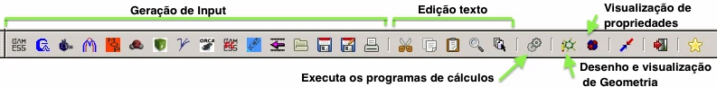
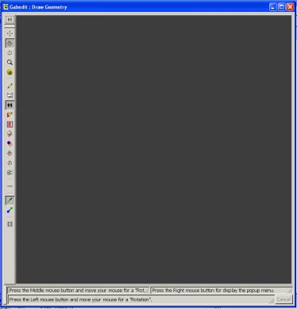
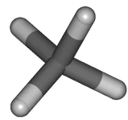
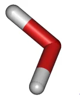
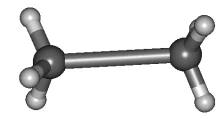
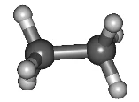
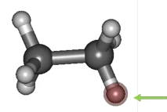
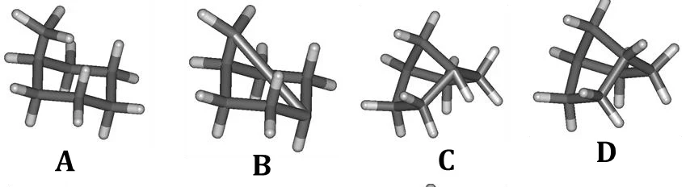
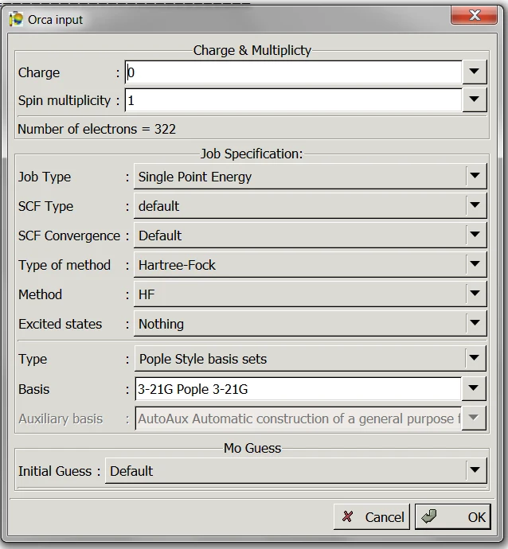
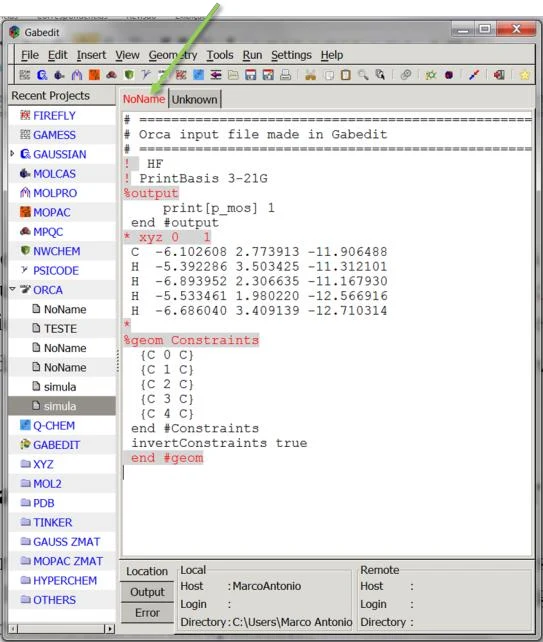

GABEDIT: desenho e geração de inputs
Nesta página você aprende a desenhar moléculas no GABEDIT e a gerar inputs do ORCA a partir delas. Esses passos são usados em todos os experimentos.
Exercício 1: desenhando moléculas
Para criar as coordenadas cartesianas usamos programas gráficos como o GABEDIT. Tudo é feito com o mouse. Nesta etapa vamos desenhar algumas estruturas apenas para pegar o jeito.
Abra o GABEDIT e identifique as regiões da barra de ferramentas abaixo. Por enquanto, use o ícone Desenho e visualização de geometria.

Ao clicar nele, abre-se a janela de desenho:

- Fundo branco: clique no botão M > Render > Background Color > Other, digite
#FFFFFFno campo Color name e clique em OK. - Desenhar: clique no ícone do lápis e verifique se o ícone H (adicionar hidrogênios automaticamente) está selecionado. Dê um clique em qualquer área da janela: aparece a molécula de metano. Se a perspectiva estiver estranha, clique duas vezes no ícone O (orientação padrão).


- Apagar: use o ícone da borracha e clique no(s) átomo(s). Para desfazer, use Ctrl+Z. Para apagar tudo: M > Edit > Delete molecule.
- Trocar o elemento: clique no ícone da tabela periódica e escolha o átomo (o lápis precisa estar selecionado). Faça isso com o oxigênio e clique na janela: você terá a molécula da água.
- Representação: o ícone de bola e vareta muda para a representação Ball & Stick; o ícone de vareta volta à anterior.
- Etano: selecione o carbono, clique na janela, mantenha pressionado e arraste. Se a ligação C–C ficar muito longa, use M > Molecular Mechanics > Optimization > OK. A estrutura é otimizada por mecânica molecular (MM) e rapidamente fica melhor do que a desenhada. Use sempre esse recurso para "corrigir" geometrias desenhadas.


- Adicionar um carbono: leve o cursor até um hidrogênio até ele ficar destacado e clique: o hidrogênio é substituído por uma metila. Para outro elemento, escolha-o antes na tabela periódica.

- Mover, girar e ampliar: use as ferramentas de translação, rotação e zoom; basta clicar, arrastar e soltar.
- Fragmentos: o ícone de fragmentos abre uma lista de grupos e moléculas prontas para inserir. Veja o manual do GABEDIT para detalhes.
- Moléculas cíclicas que não estão na lista, por exemplo o biciclo[2.2.1]heptano:
- Selecione fragmentos > RINGS > Cyclohexane.
- Com o lápis, clique num hidrogênio do anel (estrutura A). Leve o cursor até o carbono dessa metila (confira se está destacado), clique e arraste até o outro carbono cabeça de ponte, soltando só quando ele ficar verde (às vezes é preciso mudar a perspectiva). Você terá algo parecido com a estrutura B; os hidrogênios em excesso são removidos automaticamente.
- Otimize com M > Molecular Mechanics > Optimization > OK. A estrutura C ainda precisa de ajuste, pois o hidrogênio da cabeça de ponte fica muito distorcido. Com a ferramenta de mover átomos, coloque-o manualmente numa posição mais realista e otimize de novo, obtendo a estrutura D.

- Parâmetros geométricos: com a ferramenta de medidas, selecione dois átomos para uma ligação; uma janela lateral permite digitar o novo comprimento em ångström. Para ângulos e diedros, selecione os átomos em sequência. Depois, clique de novo nos átomos para tirar a seleção.
- Dupla ligação: desenhe o etano, remova um hidrogênio de cada carbono e otimize por MM: você terá o eteno.
Exercício 2: criando um input
Depois de desenhar a molécula, feche a janela de desenho; a geometria fica guardada no programa (clique de novo em Desenho e visualização de geometria para conferir). Os 11 primeiros ícones da barra de ferramentas são atalhos para gerar inputs de 11 programas diferentes:
Clique no ícone do ORCA. Abre-se uma janela para escolher carga, multiplicidade de spin, tipo de cálculo, método, função de base etc. O GABEDIT oferece só algumas das muitas opções do ORCA; as demais devem ser consultadas no manual do ORCA e editadas diretamente no input.

- Charge: carga total do sistema. O padrão é a molécula neutra (carga zero); altere para moléculas carregadas.
- Spin multiplicity: ao adicionar ou remover elétrons, você muda a multiplicidade do sistema, dada por 2S+1, onde S é o spin total da molécula.
- Job Type:
- Single Point Energy: cálculo single point.
- Equilibrium structure search: busca de um ponto de mínimo.
- Frequencies: cálculo de frequências e parâmetros termoquímicos.
- Transition state: busca de um estado de transição.
- Equilibrium structure search + Frequencies e Transition state + Frequencies: a busca seguida do cálculo de frequências.
- SCF Type: restrito (restricted) ou não restrito (unrestricted).
- SCF Convergence: critério de convergência da estrutura eletrônica. Use TightSCF.
- Type of method e Method: o método do cálculo.
- Excited states: alguns métodos permitem calcular estados excitados. Use Nothing para o estado fundamental.
- Type e Basis: algumas das funções de base disponíveis no ORCA; outras podem ser escritas direto no input.
- Initial Guess: o "chute inicial" dos orbitais moleculares. Deixe em Default.
Escolhidos os parâmetros, clique em OK: o input foi criado. Aparece uma aba NoName com o input gerado (no exemplo, com todos os parâmetros padrão para o metano). Para salvar o arquivo, clique no ícone de salvar.
